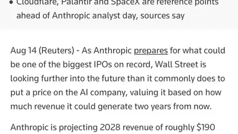
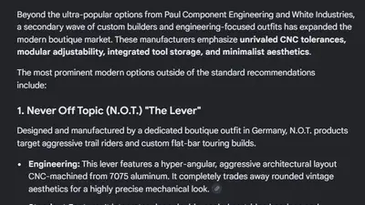

Forbes
@forbes.com
· 08/15 04:25· 命中「Anthropic」
Clark approached Epstein after he had already been convicted for soliciting prostitution.
 生活2026.08.15
生活2026.08.15
 生活2026.08.15
生活2026.08.15
 時事2026.08.14
時事2026.08.14
 生活2026.08.14
生活2026.08.14
 時事2026.08.13
時事2026.08.13
 時事2026.08.12
時事2026.08.12
Social Lab（OpView 社群口碑資料庫）每週彙整各平台熱門事件。榜上的數據以圖表呈現， 這裡列出每週彙整的標題與觀測期間，點進去看完整排行。
 PTT
PTT
 Facebook
Facebook
 Instagram
Instagram
 Mobile01
Mobile01
 YouTube
YouTube
 新聞
新聞
 Facebook 意見領袖
Facebook 意見領袖
 Instagram 意見領袖
Instagram 意見領袖
Social Lab 依社群聲量統計的各平台人氣意見領袖前三名。
Bluesky 的全站熱門話題，以英語圈的娛樂、體育、政治為主，僅供參考。
以 30 小時內、依讚數與轉發數排序，已過濾掉 AI 繪圖標籤與明顯洗版內容。
Corrected headline: OpenAI just added a keylogger to ChatGPT for Mac
we know LLM companies are fueled by plagiarism on the supply side, but this raises the worrying question of how much plagiarism defines the demand side as well
lmfaoooooo www.businessinsider.com/claude-users...
LLMs cease to be useful when they can't be used to scam people into unknowingly reading slop anymore. When the typewriter was invented, no one had to pretend its output was handwritten to get people to accept it. Typing had its own utility. LLMs are scamtech that have no utility outside the scam.
fuck google. gemini can't even set a timer without a 30 second web search for "how to set a timer". it asks to confirm whether I REALLY want to add eggs to my shopping list. we don't need generative AI for simple phone tasks. hope there's a lawsuit over the millions of devices they're downgrading
Absolutely astonishing story from Reuters, saying that Anthropic’s valuation is based on theoretical revenues of $180-200bn in 2028, and that its “current EBITDA does not fully capture the economics investors expect the company to achieve at scale.” Misleading! www.reuters.com/business/ant...

Gas pipeline for Stargate New Mexico delayed until 2027. It was meant to be done tomorrow. Oracle is not going to be able to make $30bn from its OpenAI contract let alone $300bn. This is on top of them having to start applications again for Stargate Wisconsin. Oracle's screwed!

there's a 25% chance that Google's AI bullshit will lie to you if you attempt to actually use it for anything. neither this company nor the lever actually exists. it's completely nuts that they're pushing Gemini as hard as they are, especially when Gemini models are among the worst in the industry

It’s very important that you see this moment clearly, and ask yourselves: what is it that Anthropic wants you to see, or, alternatively, what is it that Anthropic wants you to ignore? Because that is explicitly what this company is going to ask you to do with its S-1, that is exactly what this says.
DO NOT TRUST "identifications" of ICE officers or anyone else that are made by AI extrapolating from visible portions of faces. Furthermore, don't trust people offering such identifications, because they're either stupid af or manipulatively deceptive.
Possible suicide round maybe at a $1 trillion valuation or even more suicidal down round. If Anthropic goes public first OpenAI is somewhere between fucked and dead. Maybe Jensen tries to keep alive. Maybe Musk tries to merge it with spacex lol bsky.app/profile/sini...
I find it fascinating that Google's A.I. Gemini ceases to be able to do basic arithmetic when the topic is Speaker Mike Johnson and whether or not he was single when he "adopted" 14 year old Michael Tirrell James.
CORRECTION: The nonsense AI text seems to be suggesting that Kern using genAI has saved his backers 3.38 million in costs and also maybe replaced devs? Claude is a helluva drug. He’s raised at least $600,000 for this game and I’m just waiting for the class action suit.
LLM company run by white people does and enables it at scale: Most valuable private companies in the world